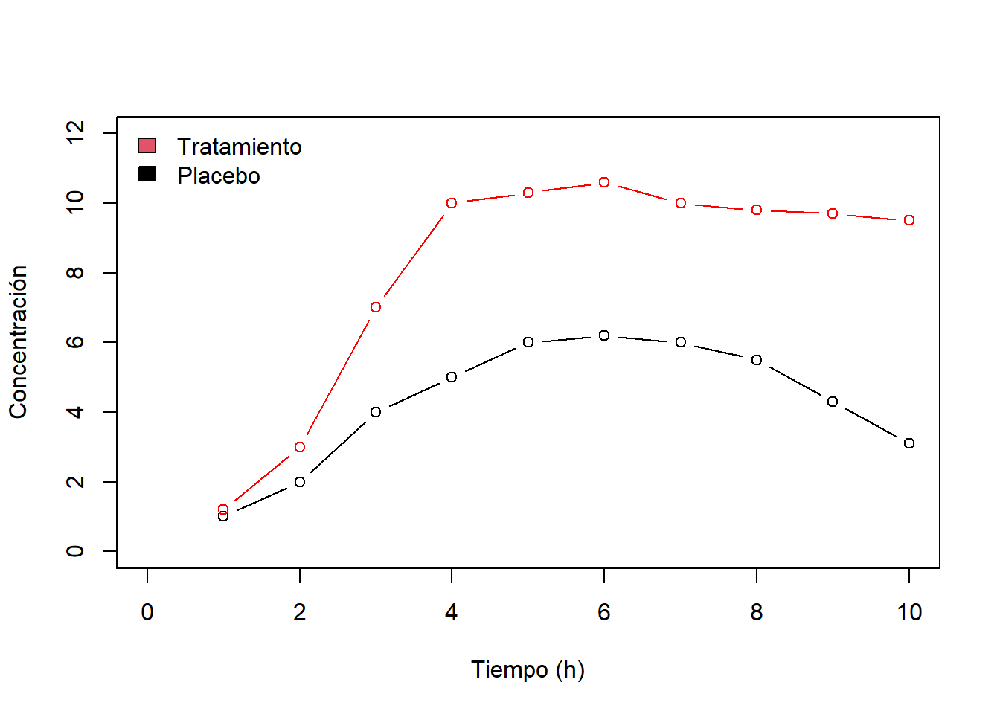
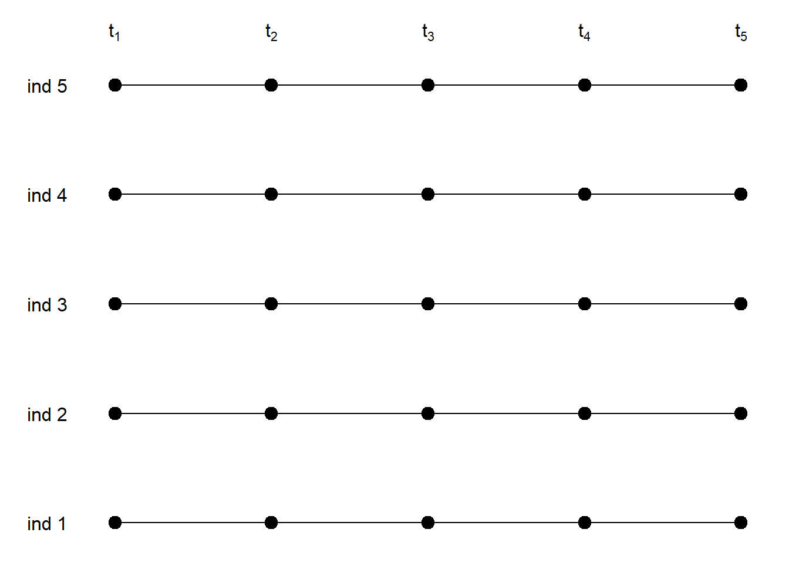
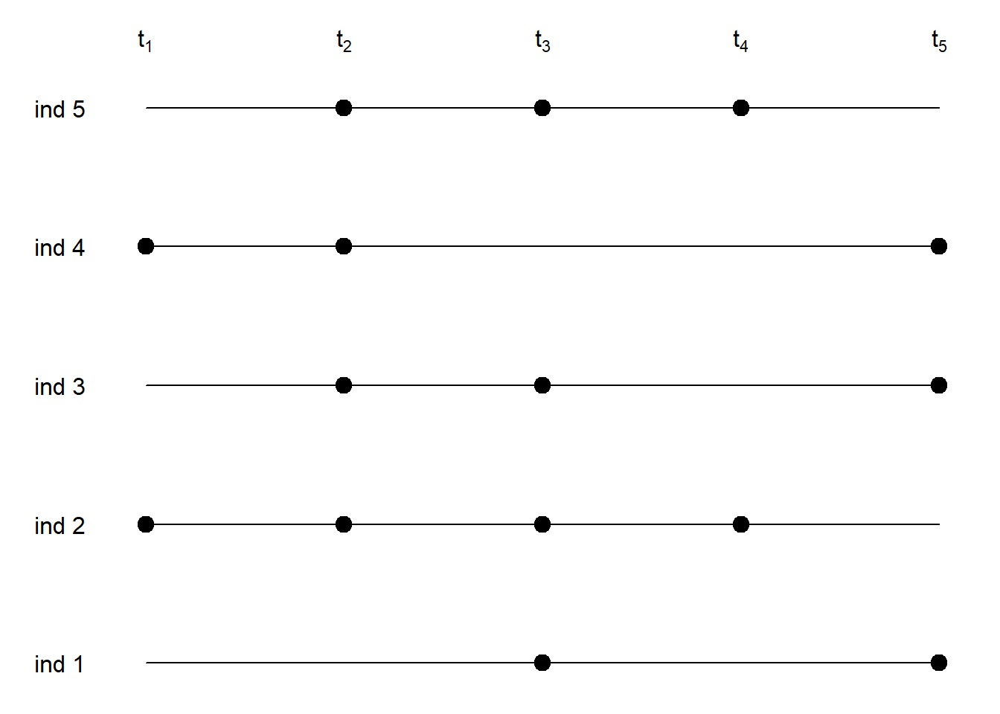
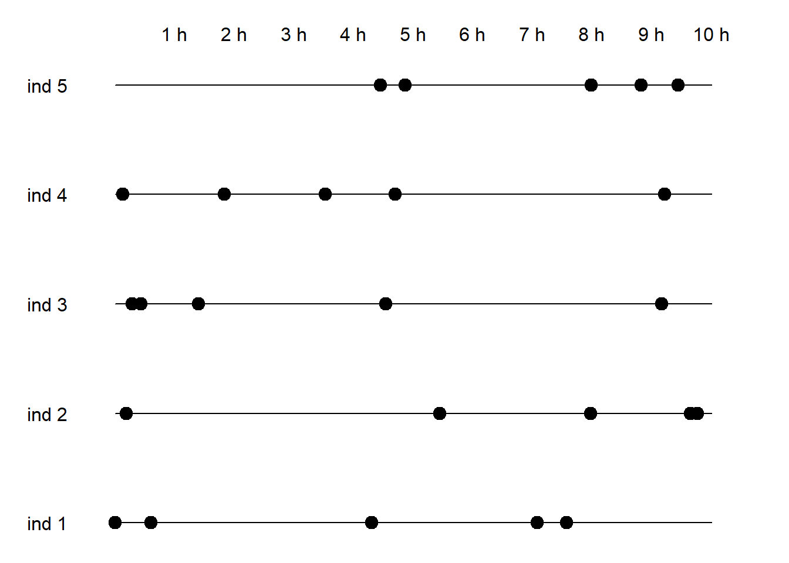

Capítulo 2 Introducción a los diseños de datos longitudinales
2.1 Definición
Un diseño longitudinal se obtiene cuando obtenemos distintas medidas de un sujeto a lo largo del tiempo. Por esto a veces a este tipo de datos también se les llama de medidas repetidas. En cada momento del tiempo se realiza una medida de una variable o de variables variables. Esta variable o variables diremos que serán cambiantes en el tiempo o tiempo-dependientes. En los diseños longitudinales típicamente se tiene una variable medida en distintos momentos del tiempo que será la variable respuesta (que normalmente queremos predecir o explicar) y opcionalmente otras variables que pueden medirse sólo en el momento basal o inicial o también pueden ser variables tiempo-dependientes.
Hay variables que, aunque cambien en el tiempo, como puede ser la edad, como lo hace igual para todos, no se considerará tiempo-dependiente. Y otras que són constantes como el sexo.
Los objetivos pueden ser distintos:
- Estudiar la evolución de una variable a lo largo del tiempo. Esto es equivalente a evaluar el efecto que tiene el tiempo sobre esta variable.
- Ver si la evolución de una variable a lo largo del tiempo es la misma en diferentes grupos. Por ejemplo ver si la concentración de un fármaco evoluaciona de la misma manera que otro fármaco ó placebo.

- Identificar patrones en la evolución o cambio de una variable a lo largo del tiempo. En este contexto se pueden usar técnicas basadas en las distancias entre curvas (que no se explicarán en este curso).
2.2 Ejemplos
Ejemplo 1
En un estudio de intervención de dieta se reclutan 100 individuos por grupo. Estos grupos son (1) grupo control: se sigue una dieta mediterránea; (2) grupo de frutos secos: la dieta mediterranea es complementada con una cantidad de nueces; (3) grupo de aceite de oliva: a la dieta mediterránea se le añade una cantidad de aceite de oliva virgen. A lo largo de los siete años que dura el estudio, cada participante es visitado y se le toman distintas medidas desde cuestionarios de dieta, actividad física, medidas antropométricas (peso, talla), la tensión arterial, o medidas en sangre (perfil lipídico, etc.). No todos los individuos acuden en todas las visitas con lo cual aparecen datos faltantes. Además, por motivos de enfermedad o de muerte, algunos de alguno de ellos no se tiene la información de las visitas finales, dando lugar a distintos tiempos de seguimiento.
Ejemplo 2
A fin de comparar tres medicamentos (A, B y C) para reducir el colesterol, se reclutan 30 voluntarios, todos ellos diagnosticados de hipercolesterolemia y de entre 40 y 60 años de edad. Cada partipante se le asigna uno de los tres medicamentos al azar de forma que 10 de ellos toman el medicamento A, otros el medicamento B y los 10 restantes el medicamento C.
Se miden los niveles de colesterol total en sangre (en mg/dL) justo en el inicio del estudio y cada 7 días en ayunas, a lo largo de 12 semanas.
Ejemplo 3
En un estudio sobre la polución ambiental en zonas urbanas, se eligen al azar 15 ciudades de más de 100.000 habitantes. De cada ciudad se eligen 4 puntos al azar con alta densidad de tráfico.
En cada punto se realizan 10 medidas desde las 8h de la mañana hasta las 17h de la tarde con intervalos de 60 minutos, en un día entre semana.
Ejemplo 4
Se quiere estudiar la población de una especie de alga en aguas marinas poco profundas. Para ello se muestrean veinte puntos al azar lo largo de la costa y a una distancia de aproximadamente un quilómetro de la playa. En cada punto se recoge una muestra a dos, cuatro, seis, ocho y diez metros de profundidas.
Finalmente, en cada muestra se contabilizan el número de especímenes que hay por centímetro cúbico de agua.
Ejemplo 5
En un estudio farmacocinético, se inyecta una cierta cantidad de un componente farmacológico en sangre. Se reclutan 15 individuos y para cada uno de ellos se mide cada hora la concentración en sangre.
Se puede estudiar las características de la curva de la concentración a lo largo del tiempo resumiendo todos los datos de concentración en un solo valor como es el AUC, o el tiempo de inflexión, etc. O bien, se puede analizar la concentración en cada punto desde el punto de vista de medidas repetidas.
Este ejemplo también se podría tratar como análisis funcional, viendo los datos de cada individuo como una función del tiempo.
Ejemplo 6
En un estudio sobre la adherencia a un medicamento, se hacen visitas mensuales a los participantes y en cada visita se pregunta si toma o no el medicamento con las dosis adecuadas, siendo la variable medida binaria (sí/no).
Ejemplo 7
En un estudio se quiere ver la eficacia de una dieta rica en aceite de oliva sobre los niveles de colesterol triglicéridos. Para ello se reculatan 3,000 participantes que son aleatorizados al grupo de tratamiento basado en una dieta enriquecida con aceite de oliva y a un grupo control a los que sólo se les indica que sigan una dieta saludable y pobre en grasas. Cada participante se visita anualmente durante sieta años en que se mide, entre otras variables los niveles de triglicéridos. A fin de asegurar o evaluar hasta qué punto los participantes siguen la dieta que les ha tocado, también se mide en cada visita un parámetro en sangre sensible a la cantidad de aceite de oliva ingerido.
No serían medidas repetidas:
- Expresión génica de distintos genes. En este ejemplo cada gen sería una variable distinta; nos podría interesar comparar los niveles de expresión entre distintos genes. Éste sería un ejemplo de muchas variables respuesta.
- Datos de seguimiento en el que se quiere estudiar la incidencia de diabetes. Para ello se hacen distintas visitas y se reporta en cada visita si el paciente es diabético o no. En este ejemplo, cada medida se toma o se mide si y solo si en la medida anterior el resultado es negativo. Sería un ejemplo de análisis de supervivencia con tiempo discreto.
- Si tenemos sólo dos medidas, aunque estrictamente son medidas repetidas, se pueden usar técnicas y modelos estándard. Por ejemplo, si la variable es continua se puede trabajar con la diferencia (después - antes) como la varaible respuesta y ajustar por el valor basal.
- Si tenemos distintas medidas pero no sabemos cuando o en qué orden se han recogido. Por ejemplo, si tenemos 3 medidas de tensión arterial para cada individuo pero no sabemos el orden en que se han tomado las medidas. En este caso, se trataría o analizaría como datos en clúster. Alternativamente se puede calcular la media para cada individuo y trabajar con modelo estándar con un sólo dato por individuo.
2.3 Esquemas de recogidas de datos
2.3.1 Todas las medidas con intervalos fijos
Medidas tomadas en los momentos \(t_1\), \(t_2\), …, \(t_5\). El intervalo transcurrido entre dos medidas puede ser constante o no. Pero son las mismas para todos los individuos. En caso que el intervalo no sea constante es importante anotar en qué momentos (segundos, minutos, horas, días, o metros…) se han hecho las medidas.

2.3.2 Missings al azar con intervalos fijos
No todos los individuos tienen datos observados en todos los tiempos. Es importante que estos datos faltantes ocurran al azar para poder considerar los modelos que vamos a ver en este curso como correctos.

2.3.3 Distintos seguimientos
Algunos individuos son seguidos a lo largo del tiempo en más visitas que otros.
2.3.4 Todas las medidas a distintos tiempos
Los datos anteriores se consideran estudios de datos panel. Es decir, los datos se recogen de forma diara, semanal, anual, etc. (a tiempo fijo). Sin embargo, lo más habitual es disponer de observaciones en distintos tiempos para cada individuo y distintos número de observaciones para cada individuo.
